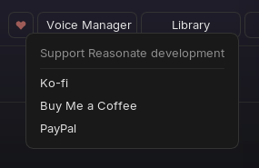

SetupInstallation and startup
The window does not open / an error mentions ReaImGui
Reasonate needs ReaImGui 0.10 or newer. Install or update it: Extensions → ReaPack → Browse packages → "ReaImGui", then restart REAPER.
"curl not found" or network calls fail instantly (macOS)
REAPER's GUI on macOS does not inherit your shell's PATH. Reasonate resolves the absolute curl path automatically on first run; if that failed, run _phase0_check.lua from the Action List once - it finds curl, validates the environment and stores the result.
API key test fails
Re-copy the key from the ElevenLabs profile page (no spaces), check that your network allows HTTPS to api.elevenlabs.io, and try Test connection again. Note: fetching a large voice library can take 10-15 seconds - that is normal.
SoundPlayback and previews
Previews open in an external player
The SWS extension is missing. SWS is a requirement - in-app playback runs through it, and without it every preview falls back to your system audio player. Install SWS from sws-extension.org, restart REAPER, and previews play inside REAPER.
Generated music does not loop
By design - the music engine has no loop option, and asking for a "seamless loop" in the prompt does not work. For short musical loops (up to 30 s), use the sound-effects engine with Loop enabled; it handles musical material like drum loops well.
RenderingConversions and generation
A long item is rejected
Items over 290 seconds are split and converted in chunks automatically. The exception: items with a modified playrate or take FX cannot be auto-chunked - glue or render the item first (Item → Render items to new take), then convert.
Rate limit errors (HTTP 429)
Handled automatically: Reasonate retries with increasing delays (1 s / 2 s / 4 s). If a job still fails, the footer chip and the mode's status line show a Retry button. Persistent 429s usually mean the plan's concurrency limit - lower the concurrency in Settings or let the batch finish at its own pace.
Everything re-rendered once after an update
Reasonate occasionally changes its cache fingerprint format between versions. The first identical render after such an update is a paid miss; from then on caching works as before. One-time cost, announced in release notes.
Dialogue line patch refuses to apply
Line patching maps panel lines to the last generated take by order. If you added, removed or reordered lines since that Generate, the mapping would be wrong, so Reasonate declines - re-generate the whole dialogue instead. Editing only the text of lines is fine.
A quota error mid-batch
The header usage bar is your early warning. Cancelled or failed jobs are not charged; finished chunks stay cached, so topping up and re-running only pays for what is missing.
FilesProjects and files on disk
| Location | Contents |
|---|---|
<project>/reasonate_cache/ | Converted audio for this project. Travels with the project folder; safe to delete (re-renders are paid). |
<project>/reasonate_projects/ | Dubbing project data and the Cast Registry (small JSON files). Keep them with the project. |
REAPER resource path /Scripts/reasonate_tmp/ | Shared caches (voice list, transcripts, TTS phrases, previews) and temporary job files. Old artifacts are swept automatically. |
Moving a project to another machine? Take the project folder including reasonate_cache/ and reasonate_projects/ - your dub, cast and cache arrive intact.
HumansGetting help and supporting the project
Found a bug or something confusing?
- Turn on Diagnostic logging (Settings → General), reproduce the problem, and open the REAPER console (View → Show console output) - the log usually names the culprit.
- Report it on GitHub Issues or in the REAPER forum thread, with the log, your OS, REAPER and ReaImGui versions, and what you clicked.
Reasonate is built by one person. If it saves you time, the ♥ button in the header (or the links below) buys the next development session a coffee.
